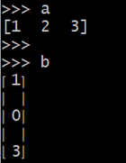
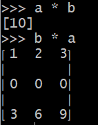
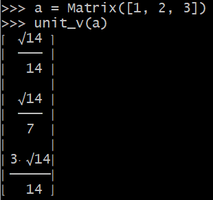
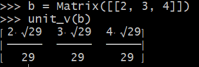
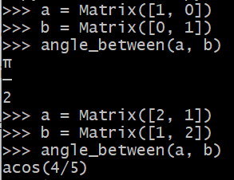
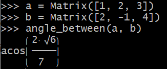

title: Matrics - Chapter 1 (1.3) 
date: 2022-06-25 
category: la #la stands for Linear Algebra 
keywords: Matrix, Sympy


<div class="container-fluid line-numbers">

  <!-- anchors -->
  <div class='txt-center mt-3'>
    <div class='right-arrow'>
      <a href="#notes" >NOTES</a> 
    </div>
    <div class="right-arrow">
      <a href="#lab">LAB</a> 
    </div>
  </div>

  <!-- blog body -->
  <div class='mt-5'>

    <div>

      <h6 id="notes">NOTES: </h6>

      <ul>
        <li>
          $Ax$ is a combination of the columns of $A$: <br>  Given a matrix $A_{m*3} = \left( \begin{smallmatrix} u \, v  \, w  \end{smallmatrix} \right)_{m*3} $ and a vector $x = \left(  \begin{smallmatrix} x_1 \\ x_2 \\ x_3     \end{smallmatrix} \right)   $, where $u, v$ , and $w$ are column vectors of matrix $A$ with the dimension m, then $Ax = x_1 u + x_2 v + x_3 w$.
        </li>

        <li>
          Every component of $Ax$ is a dot product of a row vector of $A$ and $x$: <br> Let's still take $A$ and $x$ above for demonstration here. Regarding $b = Ax$, every component of $b$ is a dot product of the corresponding row vector of $A$ and $x$. $b = \left( \begin{smallmatrix} b_1 \\ b_2 \\ b_3   \end{smallmatrix} \right) = Ax = \left(  \begin{smallmatrix}  u' \\ v' \\ w'     \end{smallmatrix}  \right) x  =  \left(  \begin{smallmatrix}  u'x \\ v'x \\ w'x     \end{smallmatrix}  \right)    $, where $u', v'$, and $w'$ are row vectors of matrix $A$.
        </li>

        <li>
          $Ax$ could be explained in words as $A$ acts on $x$, where $A$ is the function and $x$ is the input. The difference matrix $A$ acts on a vector $x$ so that $Ax$ contains differences of the adjacent elements in input vector $x$. 
          $$Ax = \left( \begin{smallmatrix} 1 \, 0 \, 0 \\  -1 \, 1 \, 0 \\ 0 \, -1 \, 1  \end{smallmatrix} \right)  \left( \begin{smallmatrix} x_1 \\ x_2 \\ x_3   \end{smallmatrix} \right) = \left( \begin{smallmatrix} x_1 \\ x_2 - x_1 \\ x_3 - x_2   \end{smallmatrix} \right) $$
        </li>

        <li>
          $u, v, w$ are independent: No combination except $0u + 0v + 0w = \mathbf{0} $. Otherwise $u, v, w$ are dependent.
        </li>

        <li>
          $A$ is an invertible matrix if $A$ has independent columns, and $Ax = 0$ has one solution.
        </li>

        <li>
          $C$ is a singular matrix if $C$ has dependent columns, and $Cx = 0$ has many solutions.
        </li>
        <!--
          \left( \begin{smallmatrix}    \end{smallmatrix} \right)
        -->
      </ul>
    </div>

    <div class='my-5 divGap-1_6em'>
      <h6 id='lab'>LAB:</h6>

      <div>
        <div>Preliminary Setup:</div>
        <pre><code class='language-python'>
          from sympy.interactive.printing import init_printing
          init_printing(use_unicode=True)
          from sympy.matrices import Matrix
          from sympy import symbols, sqrt, Rational, acos</code></pre>
      </div>
      

      <div>
        <div>
          1) &#128037 vector multiplication
        </div>

        <pre><code class="language-python">
          a = Matrix([[1, 2, 3]])  # row vector
          b = Matrix([1, 0, 3])   # column vector</code></pre>

        
        
      </div>


      <div>
        <div>
          2) &#128037 unit vector 
        </div>


        <pre><code class="lang-py">
          def norm_v(v):
              """
              compute the norm of a given vector v
              """

              norm = 0
              for x in v:
                  norm += x**2
              norm = sqrt(norm)
              return norm


          def unit_v(v):
              """
              calculate the unit vector of a given vector v
              """

              assert v.shape[1] == 1 or v.shape[0] == 1, f"Please input a vector"
              norm = norm_v(v)
              return v / norm </code></pre>

        
        
      </div>

      <div>
        <div>
          3) &#128037 compute angles between two vectors
        </div>

        <pre><code class="lang-py">
          def dot(v1, v2):
              """
              dot product of vectors v1 and v2, both v1 and v2 ought to be column vectors
              """

              assert v1.shape == v2.shape and v1.shape[1] == 1, f"the input should be column vectors with the same dimension"
              dim = v1.shape[0]
              result = 0
              for i in range(0, dim):
                  result += v1[i] * v2[i]
              return result

          def angle_between(v1, v2):
              """
              compute the angle between two given vectors according to COSINE FORMULA
              """

              assert v1.shape == v2.shape and v1.shape[1] == 1, f"the input should be column vectors with the same dimension"
              norm_v1 = norm_v(v1)
              norm_v2 = norm_v(v2)
              dot_pdt = dot(v1, v2)
              cos_theta = dot_pdt / (norm_v1 * norm_v2)
              return acos(cos_theta)  </code></pre>

        
        
      </div>


      <div>
        This is the end of this article, and thanks for reading.
      </div>


    </div>

  </div>


</div>

<!--
<hr />
<h3 id="labs-lab">Labs {:#lab}</h3>
<p>Preliminary Setup:</p>
<div class="sourceCode" id="cb1"><pre
class="sourceCode python"><code class="sourceCode python"><span id="cb1-1"><a href="#cb1-1" aria-hidden="true" tabindex="-1"></a><span class="op">&gt;&gt;&gt;</span> <span class="im">from</span> sympy.interactive.printing <span class="im">import</span> init_printing  </span>
<span id="cb1-2"><a href="#cb1-2" aria-hidden="true" tabindex="-1"></a><span class="op">&gt;&gt;&gt;</span> init_printing(use_unicode<span class="op">=</span><span class="va">True</span>)</span>
<span id="cb1-3"><a href="#cb1-3" aria-hidden="true" tabindex="-1"></a><span class="op">&gt;&gt;&gt;</span> <span class="im">from</span> sympy.matrices <span class="im">import</span> Matrix</span></code></pre></div>
<ol type="1">
<li>&amp;#128037 vector multiplication</li>
</ol>
<div class="sourceCode" id="cb2"><pre
class="sourceCode python"><code class="sourceCode python"><span id="cb2-1"><a href="#cb2-1" aria-hidden="true" tabindex="-1"></a><span class="op">&gt;&gt;&gt;</span> a <span class="op">=</span> Matrix([[<span class="dv">1</span>, <span class="dv">2</span>, <span class="dv">3</span>]])  <span class="co"># row vector</span></span>
<span id="cb2-2"><a href="#cb2-2" aria-hidden="true" tabindex="-1"></a><span class="op">&gt;&gt;&gt;</span> b <span class="op">=</span> Matrix([<span class="dv">1</span>, <span class="dv">0</span>, <span class="dv">3</span>])   <span class="co"># column vector</span></span></code></pre></div>
<p> </p>
<ol start="2" type="1">
<li>&amp;#128037 unit vector</li>
</ol>
<div class="sourceCode" id="cb3"><pre
class="sourceCode python"><code class="sourceCode python"><span id="cb3-1"><a href="#cb3-1" aria-hidden="true" tabindex="-1"></a><span class="op">&gt;&gt;&gt;</span> <span class="im">from</span> sympy <span class="im">import</span> symbols, sqrt, Rational</span>
<span id="cb3-2"><a href="#cb3-2" aria-hidden="true" tabindex="-1"></a><span class="op">&gt;&gt;&gt;</span> v <span class="op">=</span> symbols(<span class="st">&#39;v&#39;</span>)</span>
<span id="cb3-3"><a href="#cb3-3" aria-hidden="true" tabindex="-1"></a><span class="op">&gt;&gt;&gt;</span> <span class="kw">def</span> unit_v(v):</span>
<span id="cb3-4"><a href="#cb3-4" aria-hidden="true" tabindex="-1"></a><span class="op">&gt;&gt;&gt;</span>     <span class="cf">assert</span> v.shape[<span class="dv">1</span>] <span class="op">==</span> <span class="dv">1</span> <span class="kw">or</span> v.shape[<span class="dv">0</span>] <span class="op">==</span> <span class="dv">1</span>, <span class="ss">f&quot;Please input a vector&quot;</span></span>
<span id="cb3-5"><a href="#cb3-5" aria-hidden="true" tabindex="-1"></a><span class="op">&gt;&gt;&gt;</span>     norm <span class="op">=</span> <span class="dv">0</span></span>
<span id="cb3-6"><a href="#cb3-6" aria-hidden="true" tabindex="-1"></a><span class="op">&gt;&gt;&gt;</span>     <span class="cf">for</span> x <span class="kw">in</span> v:</span>
<span id="cb3-7"><a href="#cb3-7" aria-hidden="true" tabindex="-1"></a><span class="op">&gt;&gt;&gt;</span>         norm <span class="op">=</span> norm <span class="op">+</span> x<span class="op">**</span><span class="dv">2</span><span class="op">;</span></span>
<span id="cb3-8"><a href="#cb3-8" aria-hidden="true" tabindex="-1"></a><span class="op">&gt;&gt;&gt;</span>     norm <span class="op">=</span> sqrt(norm)</span>
<span id="cb3-9"><a href="#cb3-9" aria-hidden="true" tabindex="-1"></a><span class="op">&gt;&gt;&gt;</span>     <span class="cf">return</span> v <span class="op">/</span> norm </span></code></pre></div>
<p> </p>
<ol start="3" type="1">
<li>&amp;#128037 compute angles between two vectors ``` python def
norm_v(v): ““” compute the norm of a given vector v ““” norm = 0 for x
in v: norm += x**2 norm = sqrt(norm) return norm</li>
</ol>
<p>def unit_v(v): ““” calculate the unit vector of a given vector v ““”
assert v.shape[1] == 1 or v.shape[0] == 1, f”Please input a vector” norm
= norm_v(v) return v / norm</p>
<p>def dot(v1, v2): ““” dot product of vectors v1 and v2, both v1 and v2
ought to be column vectors ““” assert v1.shape == v2.shape and
v1.shape[1] == 1, f”the input should be column vectors with the same
dimension” dim = v1.shape[0] result = 0 for i in range(0, dim): result
+= v1[i] * v2[i] return result</p>
<p>def angle_between(v1, v2): ““” compute the angle between two given
vectors according to COSINE FORMUL</p>
-->
